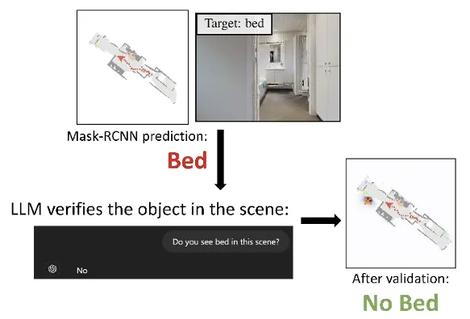
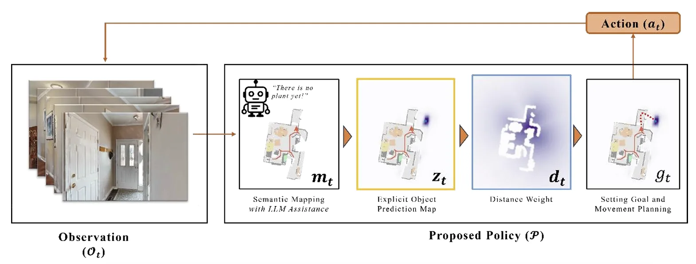

J. ICROS 2025 · Published
LLM-Assisted Object Target Prediction for Navigation
GPT-4o validates Mask R-CNN object predictions before they enter the semantic map, filtering false positives and improving success rate and trajectory efficiency on HM3D.
- Venue
- J. ICROS 2025
- Status
- Published
- Role
- Co-author
- When
- 2025
- Where
- Robotics & AI Lab, Kwangwoon University
Abstract
Object-based goal navigation tasks require embodied agents to locate specified objects in unfamiliar environments, a key challenge in vision-language navigation. Several works use end-to-end models to project observations into actions, but they often suffer from poor interpretability. Conversely, modular approaches provide interpretability by separating perception, planning, and action.
There is a notable modular framework that predicts object locations in unexplored areas via supervised learning. However, it is prone to false positives, which can degrade navigation performance. In this work, we propose an enhanced method that integrates large language model assistance into the object prediction pipeline. Specifically, we introduce a validation step that uses GPT-4o to confirm the existence of objects predicted using a mask region-based convolutional neural network (Mask R-CNN) before retrieving them in semantic maps. This validation effectively filters false positives, leading to more accurate goal identification.
Experiments on the HM3D dataset demonstrate improved success rates and trajectory efficiency, validating the effectiveness of our approach in complex indoor navigation scenarios.

